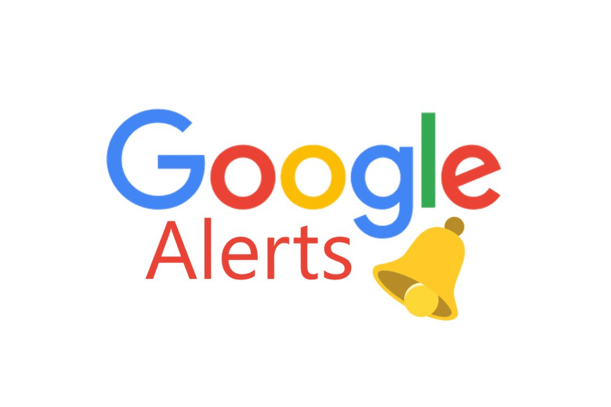
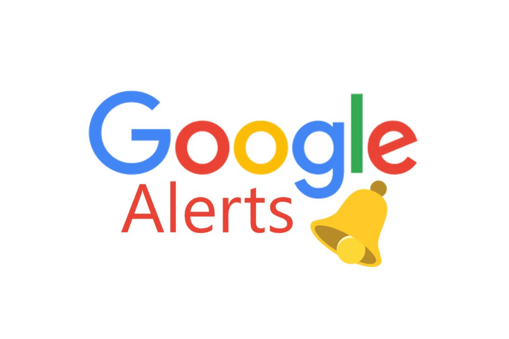

La Veille Technologique
La veille technologique ou veille informatique consiste à surveiller les évolutions techniques et les innovations dans un secteur d'activité donnée.
Afin de suivre régulièrement de la manière la plus efficace, nous allons utiliser des outils pour nous rapporter les informations recherchées tout au long de la veille.
Les méthodes PUSH & PULL
La méthode PUSH : l'information est « poussée » de manière automatique vers l'utilisateur en fonction de ses préférences et de ses critères en utilisant des flux RSS , des alertes par courriel, des listes de diffusion, des logiciels de surveillance de pages web ou des abonnements à un centre de documentation.
La méthode PULL : la méthode classique d'utilisation de l'Internet : l'utilisateur se rend directement et régulièrement sur Internet pour en «tirer» les informations les plus récentes dans un domaine particulier.
Les outils que j'ai utilisé
- Un agrégateur de Flux RSS (Ici, j'ai utilisé Feedly)
Définition d'un flux RSS: acronyme de Really Simple Syndication, est un format de données standardisé qui favorise la diffusion et l'échange de contenus fréquemment mis à jour sur le Web.
 
